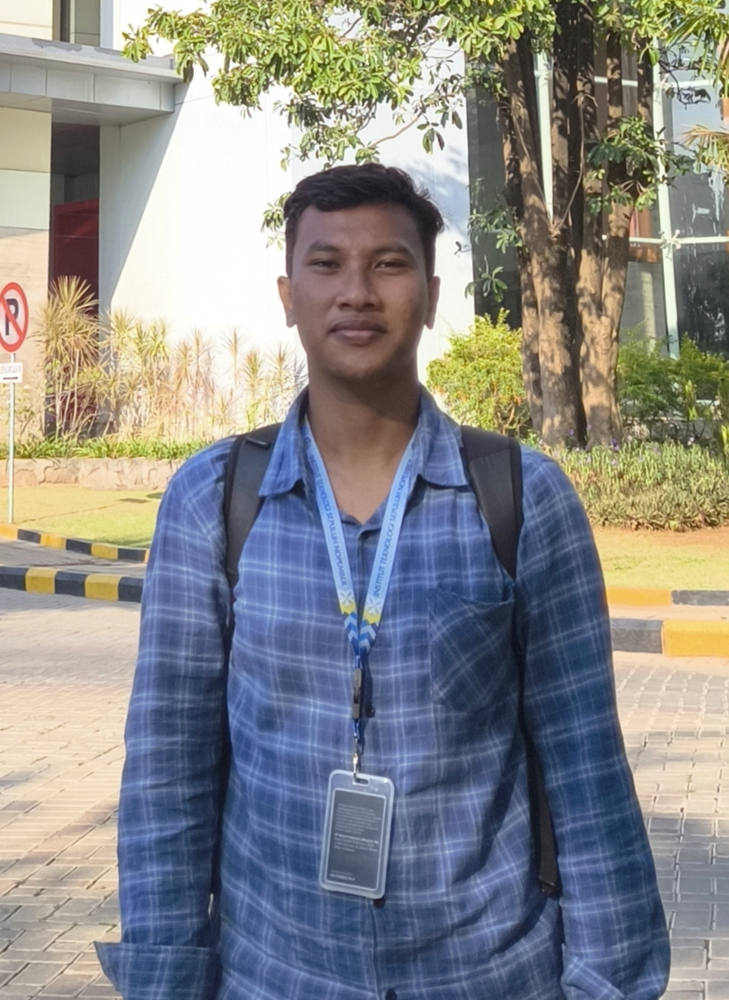

Informatics student · Tuban, Indonesia
Hi, sayaHilmy Fausta.
Saya senang membangun sistem yang saling ngobrol satu sama lain — dari notifikasi jaringan otomatis sampai bot WhatsApp — dan mengemasnya rapi lewat Docker.
0Project dikembangkan
0Program kerja Sosmas
0Tools & bahasa dipakai

Tentang Saya
Mahasiswa Teknik Informatika, Institut Teknologi Sepuluh Nopember. Selama magang di SIG, saya membangun sistem notifikasi otomatis untuk monitoring jaringan dan tiket helpdesk, sekaligus web checklist preventive maintenance aset — semuanya dijembatani lewat n8n, WAHA, dan sedikit bantuan AI lokal. Di luar itu saya juga aktif di organisasi sosial kemahasiswaan dan senang mengoprek proyek personal sendiri.
Skill & Tools
Pengalaman & Organisasi
Project
Yuk ngobrol.
Terbuka untuk kolaborasi, magang, atau sekadar diskusi infra.